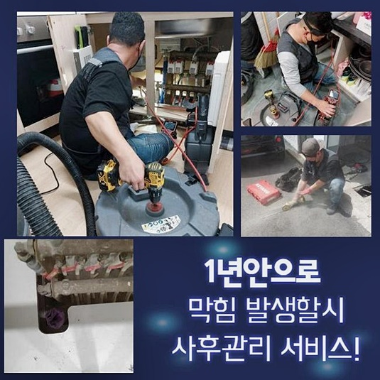
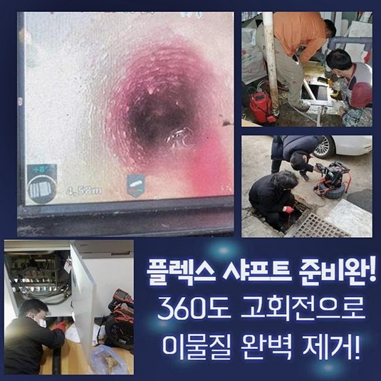
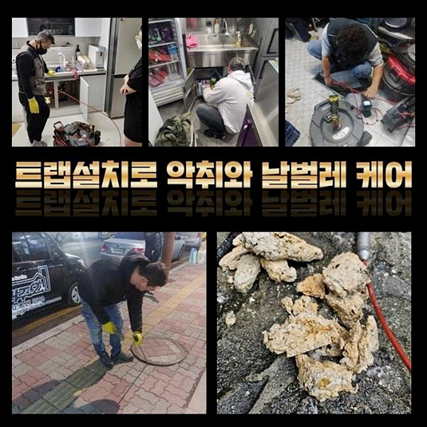
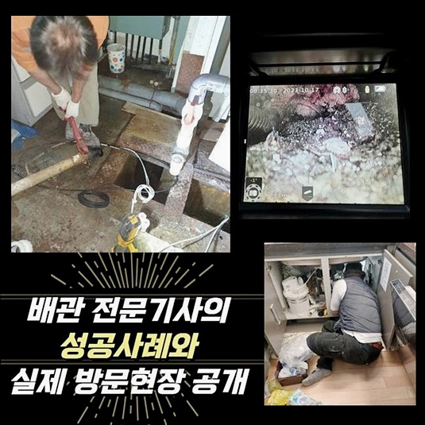
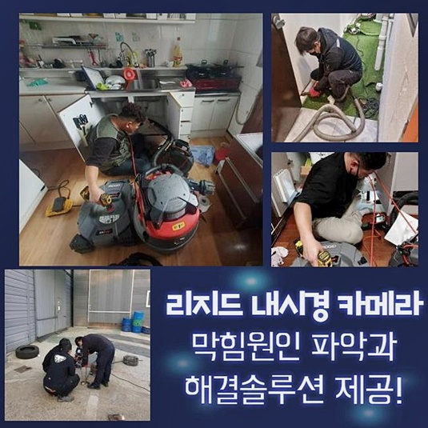
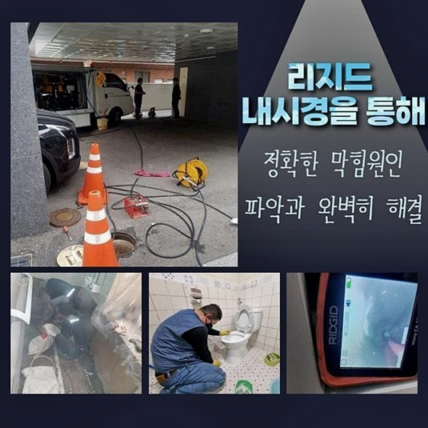

🏠 중구 주교동하수구막힘 만리동 냄새차단 출장설비
용인시 처인구 배관막힘 전문 시공 후기

📋 작업 개요
- 위치: 용인시 처인구, 수원시 영통구, 화성시 동탄
- 서비스 유형: 배관막힘, 누수수리, 고압세척, 내시경점검
- 작업 일시:
- 업체명: 하수구수사대 (010-5615-2118)
🔍 문제 상황
중구 주교동하수구막힘 만리동 냄새차단 출장설비
배수구가 막힌다면 여러분들은 어떤방법을 통해서 뚫어보고자 하실까요
대다수의경우 셀프조치로 뚫으려고 하십니다
하수구막힘이 발생했을때 조속한조치로 뚫어주는것이 좋아요
막혀있는상태로 내버려두면 2차적인 피해로인해 누수현상이나 역류문제가 발발되어 현상을 처리하기가 점점 어려워질거에요
이미이어진 경우에는 꼼꼼하게 작업할 필요가있죠
이곳의경우 배수구가 넘치게되면서 저희업체에게 연락주셨죠
외부하수구쪽에서 물이넘쳐버린 상황이었어요 안쪽에서 발현되지않은것을 다행이다라고 생각하실수있지만 바깥쪽에서 역류를보이면 전문성의 도구들이 필요하겠습니다
그렇기때문에 여러곳에서 수리를진행한 곳을통해 해결하셔야해요
의뢰자께서 설명하신내용이 심각하다고 판단되었기에 전문장비들도 미리구비한채 현장장소로 급하게 방문드렸어요
물이역류하는 집수정쪽과 여러곳에 자리잡고있는 하수도들을 점검했어요

🔎 원인 분석
💡 전문가 진단: 정밀 진단 장비를 사용하여 슬러지의 고착 여부를 판명하고 타격/세척 작업을 실시했습니다.
배관막힘을 제일우선으로 바로잡아야할 바깥쪽 하수도를 발견했습니다
작업에 임하기전 배수관에 내시경기계를 투입해보니 많은 이물로인해 심각하게 막혀있었습니다
모니터화면으로 오염물형체를 살피는것을 명확히하기가 어려웠어요 곧바로 고압세척기를 이용하여 하수구통로를 세척해내기로했죠
하수구쪽으로 바로분사해 시도해보기보단 오염물들에 집중하여 세척과정을 진행해줬더니 석션기계만으로는 꺼내기어려운 각종오염물이 제거되었습니다
바깥에있던 하수구이다보니 나무뿌리같은게 막힘을 일으킨듯 많은양으로 나왔어요
외부하수구는 나뭇가지들로 인해서 사고가일어나기도 하므로 조심하셔야해요
고압세척에 착수하여 오염물을꺼내면 대다수의 종류가 흙들과 나무종류라는게 보인까닭으로 더강력한세기로 세척하게되었죠
보통 하수구에서 발견되는 이물은 기름기있는 종류들인데요
그치만 나무나 흙들은 하수구벽에 접착되어있지 않았으며 매우많은양의 이물이 투입되면서 고착되버린 상황이었답니다
고압청소기로 이물의 하수구중앙에 힘을가하여 외부쪽으로 배출하기위하여 집중해서 작업했죠
강한수압의 고압세척도구로 제거하는데도 내부쪽에는 강력한석회가 자리하고있는듯 확고하게 제거되지못했어요

🔧 작업 과정
깔끔하게 제거해내고자 재차 내시경기계를 투입해서 어떤부분을 공략하는게 좋은것인지 살펴보기로했죠
배수구입구 주변에서는 상당수의 잔여물질이 제거되었기에 전과다르게 시야가확보되서 잔여물의 상태와종류를 더욱 확실하게 알아낼수있었네요
모래와뿌리들이 뭉쳐버린것을 흡입하면서 살펴보니 나무와모래외에도 여러가지의 이물질들이 계속하여 나오고있었죠
전과다르게 상당수의 내용물이 제거된상황이라 고객님도 나오신후 살펴보셨죠
바깥쪽에있는 하수구에서 나무관리나 쓰레기들을 버리게될때 유의해달라고 전해드렸어요
작업진행중 외부배관속에서 큰석회를 꺼내게되었죠
개방적이게 활용시되는 외부에위치한 하수관이므로 이러한 이물들이 투입되기가 어렵지않았죠
각종나무재질의 이물들이 하수도내부에 고착되어있었지만 청소를진행하니 제거할수있었죠
아래속에는 기름이물이 끈끈하게 굳은부분들도 발견되었는데 내부쪽에서 하수구로빠지는 기름과같이 각종이물들이 뭉쳐지면서 하수도를 막게된것으로 파악할수가 있었습니다
외부관의 넓이자체가 큰편임에도 통로자체를 가로막을만큼 상황이좋지 않았다고 말씀드릴수 있겠습니다
고착물질을 제거한후에도 남아있는 잔여물질들을 전부제거하여 하수관내부를 깨끗히 만들었습니다
집수정의 깊이가 깊다보니 시간이좀 걸리게되었지만 손상발생이 없도록 배수관을 뚫을수있었죠
배관물넘침이 발현된곳을 작업하면 상상치못한 잔해물을 발견하는일이 많답니다
막힘징조를 보이자마자 대처하신다면 고압세척기가 없더라도 간단히 처리할수있어요
막히는현상을 가볍게 여기게되서 미루실수가있겠지만 배관시스템을 이용해야하므로 공사까지 할수있다는것을 참고바래요
단순하게 막힘증세만 보이거나 쉽지않은 상태더라도 전문가에게 맡겨보시면 확실한 해결로 이어질수있어요
저희업체는 수리방식도 현장상태에 알맞게끔 과도한작업없이 진행해드리므로 가벼운막힘으로 상태가 심각하지않을때는 간단히도 해결가능해요


✅ 작업 완료
이번작업처럼 심한상태면 여러가지 장비들을 모두동원해 문제해결을 해드리고있어요
배관속은 육안만을 가지고 파악하는것과 실제적인 내부속은 차이점이 존재하는데 이런부분도 내시경으로 의뢰자분들도 확인할수있게 해드려 신뢰하시고 맡기셔도괜찮으니 편안히 문의해주세요
외부하수구뿐만 다루는것이 아니고 가정집배관도 전체로 다루고있사오니 문제발생시 아무때나 전화주시길 바래요
1시간안팎으로 어떤지역이든 도착하는것이 가능하고 투명히 작업내용을 공개해드려요
공휴일에도 상담가능하여 연락하시면 친절한말투로 맞이해드릴게요



⚠️ 하수구 배관 막힘 예방 및 관리 가이드
- ✅ 머리카락, 비닐, 물티슈 등 물에 분해되지 않는 이물질은 절대 흘려보내지 마세요.
- ✅ 기름기 많은 식기는 설거지 전 키친타올로 먼저 기름때를 닦아내세요.
- ✅ 주기적으로 배수구에 뜨거운 물을 가득 부어주어 유지방 고착을 방지하세요.
- ✅ 작업 후 1년 이내 재발 시 무상 A/S 보증 서비스를 제공합니다.
💡 핵심 정리
- 확실한 장비 작업(내시경 점검 및 샤프트 스케일링)으로 원인을 뿌리 뽑습니다.
- 작업 후 1년 이내에 동일한 부위 재발 시 100% 무상 A/S 서비스를 보장합니다.
- 서울 · 경기 · 인천 전 지역에 24시간 언제든 긴급 출동할 수 있도록 항시 대기 중입니다.
❓ 자주 묻는 질문 (FAQ)
🚨 용인시 처인구 배관막힘 문제로 고민이신가요?
정확한 원인 진단과 확실한 시공으로 재발 없는 해결을 약속드립니다.
24시간 긴급 출동 | 서울 · 경기 · 인천 전지역 | 1년 내 재발 시 무상 A/S